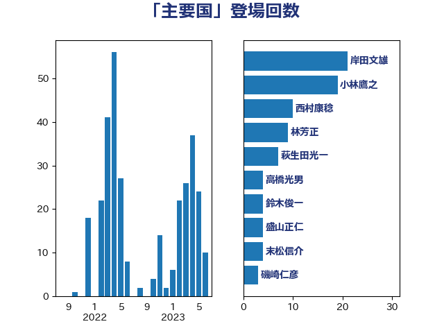

単語「主要国」

| 岸田文雄 | 自由民主党 | 21 回 |
| 小林鷹之 | 自由民主党 | 19 回 |
| 西村康稔 | 自由民主党 | 10 回 |
| 林芳正 | 自由民主党 | 9 回 |
| 萩生田光一 | 自由民主党 | 7 回 |
| 高橋光男 | 公明党 | 4 回 |
| 鈴木俊一 | 自由民主党 | 4 回 |
| 盛山正仁 | 自由民主党 | 4 回 |
| 末松信介 | 自由民主党 | 4 回 |
| 磯崎仁彦 | 自由民主党 | 3 回 |
| 櫻井周 | 立憲民主党 | 3 回 |
| 柴田巧 | 日本維新の会 | 3 回 |
| 末松義規 | 立憲民主党 | 3 回 |
| 小池晃 | 日本共産党 | 3 回 |
| 太田房江 | 自由民主党 | 3 回 |
| 大塚耕平 | 国民民主党 | 3 回 |
| 吉良州司 | 無所属 | 3 回 |
| 倉林明子 | 日本共産党 | 3 回 |
| 音喜多駿 | 日本維新の会 | 2 回 |
| 青島健太 | 日本維新の会 | 2 回 |
| 階猛 | 立憲民主党 | 2 回 |
| 野田佳彦 | 立憲民主党 | 2 回 |
| 落合貴之 | 立憲民主党 | 2 回 |
| 細田健一 | 自由民主党 | 2 回 |
| 篠原豪 | 立憲民主党 | 2 回 |
| 福田昭夫 | 立憲民主党 | 2 回 |
| 福岡資麿 | 自由民主党 | 2 回 |
| 神田潤一 | 自由民主党 | 2 回 |
| 石井苗子 | 日本維新の会 | 2 回 |
| 浜田聡 | NHK党 | 2 回 |
| 浜地雅一 | 公明党 | 2 回 |
| 泉健太 | 立憲民主党 | 2 回 |
| 松川るい | 自由民主党 | 2 回 |
| 東徹 | 日本維新の会 | 2 回 |
| 有村治子 | 自由民主党 | 2 回 |
| 平将明 | 自由民主党 | 2 回 |
| 大島敦 | 立憲民主党 | 2 回 |
| 堂込麻紀子 | 無所属 | 2 回 |
| 和田政宗 | 自由民主党 | 2 回 |
| 古川禎久 | 自由民主党 | 2 回 |
| 住吉寛紀 | 日本維新の会 | 2 回 |
| 上田清司 | 国民民主党 | 2 回 |
| 高市早苗 | 自由民主党 | 1 回 |
| 青山大人 | 立憲民主党 | 1 回 |
| 鈴木隼人 | 自由民主党 | 1 回 |
| 鈴木義弘 | 国民民主党 | 1 回 |
| 鈴木宗男 | 日本維新の会 | 1 回 |
| 遠藤良太 | 日本維新の会 | 1 回 |
| 辻清人 | 自由民主党 | 1 回 |
| 越智隆雄 | 自由民主党 | 1 回 |
| 豊田俊郎 | 自由民主党 | 1 回 |
| 谷公一 | 自由民主党 | 1 回 |
| 西岡秀子 | 国民民主党 | 1 回 |
| 茂木敏充 | 自由民主党 | 1 回 |
| 羽田次郎 | 立憲民主党 | 1 回 |
| 美延映夫 | 日本維新の会 | 1 回 |
| 篠原孝 | 立憲民主党 | 1 回 |
| 笠井亮 | 日本共産党 | 1 回 |
| 窪田哲也 | 公明党 | 1 回 |
| 秋野公造 | 公明党 | 1 回 |
| 秋本真利 | 無所属 | 1 回 |
| 福島伸享 | 無所属 | 1 回 |
| 福島みずほ | 社会民主党 | 1 回 |
| 礒崎哲史 | 国民民主党 | 1 回 |
| 石川博崇 | 公明党 | 1 回 |
| 石原宏高 | 自由民主党 | 1 回 |
| 石井正弘 | 自由民主党 | 1 回 |
| 田村貴昭 | 日本共産党 | 1 回 |
| 田村智子 | 日本共産党 | 1 回 |
| 田中昌史 | 自由民主党 | 1 回 |
| 牧山ひろえ | 立憲民主党 | 1 回 |
| 熊谷裕人 | 立憲民主党 | 1 回 |
| 漆間譲司 | 日本維新の会 | 1 回 |
| 浜田靖一 | 自由民主党 | 1 回 |
| 浅田均 | 日本維新の会 | 1 回 |
| 泉田裕彦 | 自由民主党 | 1 回 |
| 沢田良 | 日本維新の会 | 1 回 |
| 永岡桂子 | 自由民主党 | 1 回 |
| 横山信一 | 公明党 | 1 回 |
| 森本真治 | 立憲民主党 | 1 回 |
| 森屋宏 | 自由民主党 | 1 回 |
| 松野博一 | 自由民主党 | 1 回 |
| 村田享子 | 立憲民主党 | 1 回 |
| 本村伸子 | 日本共産党 | 1 回 |
| 本庄知史 | 立憲民主党 | 1 回 |
| 斎藤アレックス | 国民民主党 | 1 回 |
| 斉藤鉄夫 | 公明党 | 1 回 |
| 後藤茂之 | 自由民主党 | 1 回 |
| 平木大作 | 公明党 | 1 回 |
| 平山佐知子 | 無所属 | 1 回 |
| 市村浩一郎 | 日本維新の会 | 1 回 |
| 工藤彰三 | 自由民主党 | 1 回 |
| 岩渕友 | 日本共産党 | 1 回 |
| 岡本三成 | 公明党 | 1 回 |
| 山田美樹 | 自由民主党 | 1 回 |
| 山本香苗 | 公明党 | 1 回 |
| 山崎誠 | 立憲民主党 | 1 回 |
| 山岡達丸 | 立憲民主党 | 1 回 |
| 山口壯 | 自由民主党 | 1 回 |
| 尾身朝子 | 自由民主党 | 1 回 |
| 小西洋之 | 立憲民主党 | 1 回 |
| 小川淳也 | 立憲民主党 | 1 回 |
| 大石あきこ | れいわ新選組 | 1 回 |
| 堀井巌 | 自由民主党 | 1 回 |
| 城内実 | 自由民主党 | 1 回 |
| 勝目康 | 自由民主党 | 1 回 |
| 加藤勝信 | 自由民主党 | 1 回 |
| 伊藤達也 | 自由民主党 | 1 回 |
| 伊波洋一 | 無所属 | 1 回 |
| 井野俊郎 | 自由民主党 | 1 回 |
| 中川郁子 | 自由民主党 | 1 回 |
| 中川貴元 | 自由民主党 | 1 回 |
| 下条みつ | 立憲民主党 | 1 回 |
| 上杉謙太郎 | 自由民主党 | 1 回 |
| 上川陽子 | 自由民主党 | 1 回 |
| 三上えり | 立憲民主党 | 1 回 |